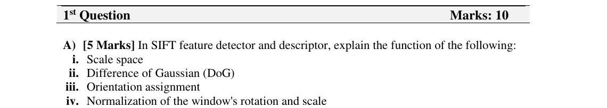

Midterm · Question 1·A — SIFT: scale space, DoG, orientation, normalisation
Question 1·A (5 marks) — as printed

Solution — the four SIFT building blocks
Memorise SIFT as a four-step pipeline: blur stack → find blobs across scale → rotate the patch → describe it. The four items in the question map to these four pieces in order.
i. Scale space
A stack of progressively blurred versions of the image (Gaussian with increasing σ), arranged in octaves (each octave is half the resolution of the one above). It lets the same keypoint be found whether the object is photographed close-up or far away.
Purpose: represent the image at multiple scales so we can find features that are invariant to image scale (zoom in / zoom out).
ii. Difference of Gaussian (DoG)
Inside each octave, subtract neighbouring blurred images: DoG(σ) = G(kσ) − G(σ). The result approximates the scale-normalised Laplacian-of-Gaussian at that σ.
Purpose: a cheap approximation of the Laplacian used to detect blob-like keypoints as local extrema in 3D (x, y, scale). Less computation than computing LoG directly.
iii. Orientation assignment
Around each keypoint, build a histogram of gradient orientations weighted by gradient magnitude and a Gaussian window. The peak of the histogram becomes the keypoint's canonical direction.
Purpose: gives the keypoint rotation invariance. Everything described after this step is measured relative to that canonical direction, so a rotated copy of the same patch produces the same descriptor.
iv. Normalisation of the window's rotation and scale
Take the local 16×16 window, rotate it so the dominant direction points "up" and resize it to a fixed size relative to the keypoint's scale. Only then is the gradient histogram (the 128-D descriptor) computed.
Purpose: aligns every patch into the same canonical scale and orientation before description, so two views of the same point produce nearly identical descriptors.
📚 L04 — Scale space & DoG, L04 — Orientation assignment & descriptor.